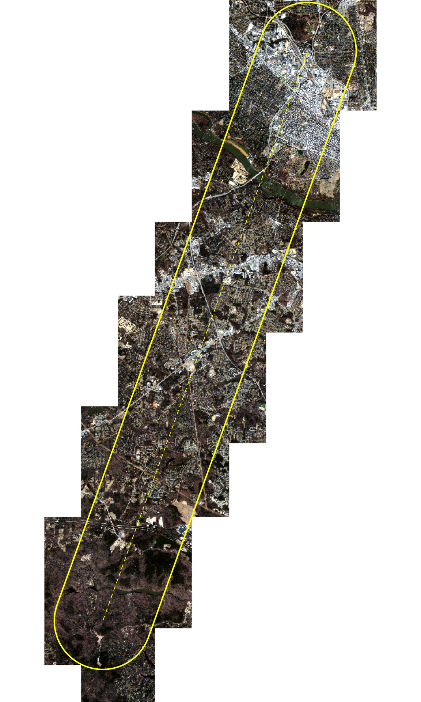

Transect from industrial Richmond to Pocahontas State Park
Published
November 4, 2026
Code
library(sf)library(dplyr)library(ggplot2)library(leaflet)library(yaml)library(here)cfg <-read_yaml(here("config.yml"))derived <-here(cfg$paths$derived)pts <-st_read(file.path(derived, "aoi.gpkg"), layer ="transect_points", quiet =TRUE)line <-st_read(file.path(derived, "aoi.gpkg"), layer ="transect_line", quiet =TRUE)aoi <-st_read(file.path(derived, "aoi.gpkg"), layer ="aoi", quiet =TRUE)tiles <-st_read(file.path(derived, "tiles_needed.gpkg"), quiet =TRUE)# Status is checked at render time; tile paths are relative to the project roottiles$converted <-file.exists(here(tiles$tif_path))tiles$state <-case_when( tiles$converted ~"converted", tiles$status =="local"~"local (not converted)",TRUE~"missing (download needed)")state_cols <-c("converted"="#1b9e77","local (not converted)"="#7570b3","missing (download needed)"="#d95f02")
Purpose
This project uses 2025 Virginia Base Mapping Program (VBMP) orthoimagery along a transect from industrial Richmond to Pocahontas State Park. The statewide imagery is distributed as RGB MrSID tiles, and VGIN supplies 4-band (red, green, blue, near-infrared) GeoTIFF tiles on request. Only the tiles that overlap the study area are used, combined into a single virtual mosaic. The mosaic is built from the 4-band GeoTIFFs (imagery_source: "4band" in config.yml), so it carries the near-infrared band needed for NDVI.
Step
Script
Output
1. Build transect and buffer
R/01_build_aoi.R
data/derived/aoi.gpkg
2. Select intersecting tiles
R/02_select_tiles.R
data/derived/tiles_needed.{gpkg,csv}
3. Convert MrSID to GeoTIFF (RGB only; not needed with the 4-band tiles)
All parameters live in config.yml. Analysis scripts load the imagery with load_ortho() from R/functions.R, which returns the mosaic limited to the study area without copying any data.
ortho <- terra::rast(vrt_path)preview <- terra::rast(preview_path)cat(sprintf("The virtual mosaic combines %d GeoTIFF tiles into one %s × %s px image at %g ft resolution (bands: %s). It only references the tiles, so it takes no extra disk space. The preview below is resampled to %g ft pixels; the study area is outlined in yellow.",nrow(tiles), format(terra::ncol(ortho), big.mark =","), format(terra::nrow(ortho), big.mark =","), terra::res(ortho)[1], paste(names(ortho), collapse =", "), terra::res(preview)[1]))
The virtual mosaic combines 75 GeoTIFF tiles into one 45,000 × 95,000 px image at 1 ft resolution (bands: red, green, blue, nir). It only references the tiles, so it takes no extra disk space. The preview below is resampled to 25 ft pixels; the study area is outlined in yellow.
Code
terra::plotRGB(preview, stretch ="lin", mar =c(0, 0, 0, 0))terra::plot(terra::vect(aoi), add =TRUE, border ="yellow", lwd =2)terra::plot(terra::vect(line), add =TRUE, col ="yellow", lty =2)

Notes
Imagery source: VBMP 2025 12-inch orthoimagery (Sanborn Map Company, flown February to March 2025), distributed by the Virginia Geographic Information Network (VGIN). The MrSID versions are RGB only. The near-infrared band is only in the 4-band GeoTIFF deliverables, which share the MrSID tiles’ names and pixel grid exactly (same 5,000 × 5,000 px extent and origin, EPSG:2925). Their RGB bands are the uncompressed originals: compared with the MrSID-derived RGB they differ by about 5 digital numbers on average, with no bias (MrSID compression noise), so the 4-band tiles replace the MrSID set.
Tile layout: each 12-inch tile is 5,000 × 5,000 px at 1 ft, covering 5,000 × 5,000 ft. Tile names follow DO_S13_<section>_<quarter>.2025.
MrSID decoding (only needed with imagery_source: "rgb"): the MrSID GDAL driver only loads inside the QGIS application (macOS code-signing blocks it from the command line), so conversion runs in the QGIS Python console.
Mosaic edges: the VRT has no nodata value. Areas outside the tiles read as 0 in all bands; all such areas lie outside the study area.